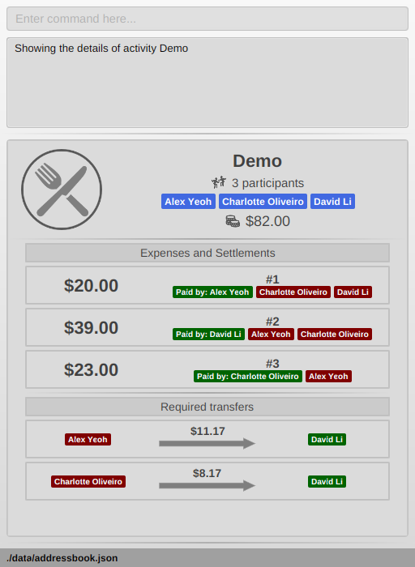
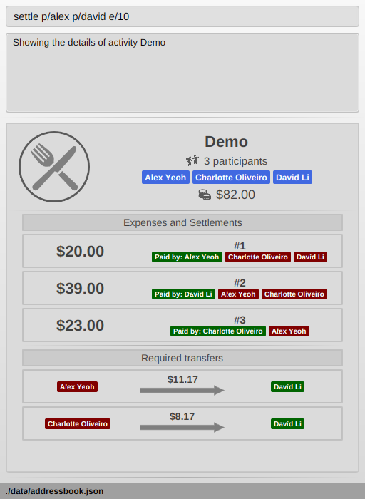
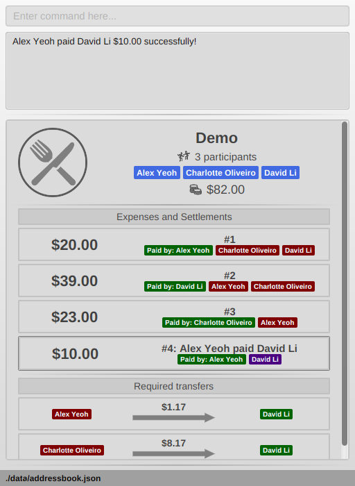
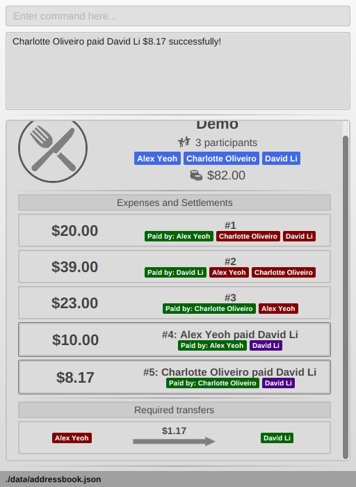

Overview
Splitwiser is an application for simplifying payments made between groups of friends. It gurantees that each person does not need to make any unnecessary transfers to settle their debts. The user interacts with it using a command line, and is targeted at users who prefer command line utilities. It however has a nice JavaFX Graphical User Interface(GUI) to report details visually and intuitvely. It has >10k lines of code.
Summary of contributions
-
Major enhancement: added the debt simplification algorithm.
-
What it does: It simplifies all debts optimally in each activity.
-
Justification: This is the core feature, and the main point of the entire application.
-
Details: The algorithm scales well to huge amounts of participants and expenses, and can be mathematically proved to always minimize the money everyone has to touch in order to settle all debts in the group. #101
-
Credits: This paper.
-
-
Major enhancement: Added a command to settle debts
-
What it does: The
settlecommand helps users record settlements of debts after they pay each other in person. -
Justification: It is a core feature to be able to record special payments between two people specifically to settle debts.
-
Details: The algorithm shows how much is owed.
settlecan either automatically settle all debts between two people, or settle a particular amount between two people. It also checks for valid settlements; so no settlement can make debts worse in accord with our philosophy of always simplifying debts. #190
-
-
Major enhancement: Added persistent internal state for primary key tracking.
-
What it does: It keeps track of important variables across startups of the application.
-
Justification: We require a unique identifier for every person and activity for the purpose of storing activities, contacts, etc. We need a way to store this across startups so it is unique.
-
Details: This ID record for every object has to persist so that we don’t end up assigning repeated IDs to different people/activities. We also need to perform validation on this data. #80 #104
-
-
Major enhancement: Update bindings for every command to mesh with the algorithm.
-
Minor enhancement: added a history command that allows the user to navigate to previous commands using up/down keys.
-
Details: You can press the up and down arrow keys to browse previous commands executed. #53
-
-
Code contributed: Contribution info.
-
Other contributions:
-
Project management:
-
Enhancements to existing features:
-
Added tests on other’s pull requests: (dbb83e)
-
-
Helping others:
-

Contributions to the User Guide
Given below are sections I contributed to the User Guide. They showcase my ability to write documentation targeting end-users. |
Settle debts in an activity : settle
Settles the debt between two people within the currently viewed activity.
Specify two people, and optionally an amount AMOUNT_PAID to settle.
There are two options available:
-
AMOUNT_PAIDis not provided: then the command will automatically calculate the minumum needed to settle the debt and use that as the amount. -
AMOUNT_PAIDis provided: the command will use this amount.
The first person specified PERSON1 will pay PERSON2.
PERSON1 and PERSON2 can be any part of the names of the activity participants you wish to target.
Generally it is similar to how you would add an ordinary expense.
If no match is found for any person provided, or if multiple matches are found, the command will do nothing as it is ambiguous.
An entry will be added within the activity display so you can keep track of past payments. These entries will have a generic description tagged to them to make it clear what it is, and they will also be highlighted in a frame to distinguish them from ordinary expenses.
Format: expense p/PERSON1 e/AMOUNT_PAID p/PERSON2
Example run:
-
Go to the activity you wish to modify with the
list a/andviewcommands. You will see something like this:

-
settle p/alex p/david e/10
Adds an settlement to the activity stating that Alex has paid David $10. If Alex owes less than $10 to David, the command will be rejected. In this case it is accepted since Alex owes about $20 or so to David. The two pictures below show what will happen before and after the command. Notice the new expense added, which is also conveniently highlighted.
 
-
expense p/charlotte p/li
No amount to pay is provided, so it is assumed that Charlotte wants to pay David (Li) as much as is needed to clean their debt. This is what we see:

Powerusers
Certain features are not included intentionally, as some of them may potentially result in undefined behavior. Hence, everything covered in this section is performed by you in the explicit knowledge that something might break!
Force deleting expenses
The default behavior for disinvite is to never allow permanant deletion for expenses.
What you will see instead is that it is striked out in the UI.
This is for good reason!
It preserves accountability and transparency.
You can however forcibly delete an expense by editing the data/activitybook.json file if you so incline.
Before anything, find out the ID of the expense that you wish to remove (this is different from the # index shown on the right of the GUI).
Ensure the application is closed, then find the activity in question in the json, and edit the expenses field as you wish.
After restarting you will see that the expense is permanantly removed from the activity. The debts will have been recalculated as though it was never there.
| Deleting an expense does not care about the existing debts caused by that expense! |
Force disinvite from activity
If a contact is involved in an expense, he/she cannot be removed.
To forcibly remove a contact from an activity, you will have to edit data/activitybook.json.
Before anything, find out the ID of the person that you wish to remove (this is different from the # index shown on the right of the GUI).
You should also be extremely sure that the contact is not involved in any other activities or expenses.
Ensure the application is closed, then find the activity in question in the json, and edit the participants field as you wish.
After restarting you will see that the person is permanantly removed from the activity.
| This operation is very dangerous! The person might be included in expenses or other activities — in that case, an error will be generated and the application will reset. |
Contributions to the Developer Guide
Given below are sections I contributed to the Developer Guide. They showcase my ability to write technical documentation and the technical depth of my contributions to the project. |
Debt simplification algorithm
The algorithm is inspired by this paper.
We can gurantee the removal of all needless payments. The amount of money each person has to hand is minimized. We are unable to minimize the number of transactions made. The paper gives an overview of that problem and why it is NP-complete (subset-sum).
Operation details
The amounts each person owes to another is represented by a graph in an adjacency matrix. The algorithm represents the payments to be made as a matrix. There are some other data structures to facilitate its operation, but the code is generally well commented and they are not major player so we will skip them.
To rephrase our gurantee in this context will be: we want to minimize weights. That is, the total amount of money someone will have to touch is minimized.
The lower bound for the amount someone has to handle is the balance. We create a balance sheeet for the users which is expanded as people enter the activity. Each expense added, the algorithm retrieves from it: * who is involved, * who paid, * how much has been paid, splits everything correctly, and updates all the data structures appropriately.
Someone’s balance is positive if he received more than he owes. Then, a negative balance indicates them lending more than they received. The algorithm simply finds any two people whose balances have opposing signs. It is unimportant what is the magnitude of their balances (we do not need to take them in any order). What then happens is then the person with the smallest magnitude of balance neutralizes his balance by paying or being paid by the other party. The algorithm terminates when all balances are 0.
Proof of optimality
This is a short proof of optimality since we want it to be called "algorithm", not "heuristic".
In essence what we are constructing is a bipartite graph. The algorithm never allows someone who owes to be paid, or someone who is owed to pay even more. Hence we can classify all nodes into those with leaving edges (payers) and those with entering edges (payee).
In a bipartite graph the amount each person handles is minimized. To see why, we have to keep in mind that the algorithm always neutralizes one of the parties' balance. That is to say, we will not be left with the case where someone who could pay off all his debts "overpaying". In such a case, someone will then have to pay him back, which means it is no longer bipartite.
Time and Space complexity
We take O(N^2) space and O(N) time. Updating of the balance sheet and matrices by the expense command is performed in O(1) time.
Design Considerations
Aspect: Precision
-
Alternative 1 (current choice): Just use
double.-
Pros: Easy, straightforward, good enough.
-
Cons: Floating point precision might stack up.
-
Reason for choice: For everyday purposes it is highly unlikely currencies (normally at most 2 decimal points) require any higher precision. This is for normal friends, not stockbrokers.
-
-
Alternative 2: Implement a
Rationalclass for rational numbers.-
Pros: Guranteed precision.
-
Cons: Seems overkill and needlessly over-engineered.
-